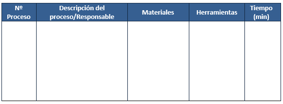
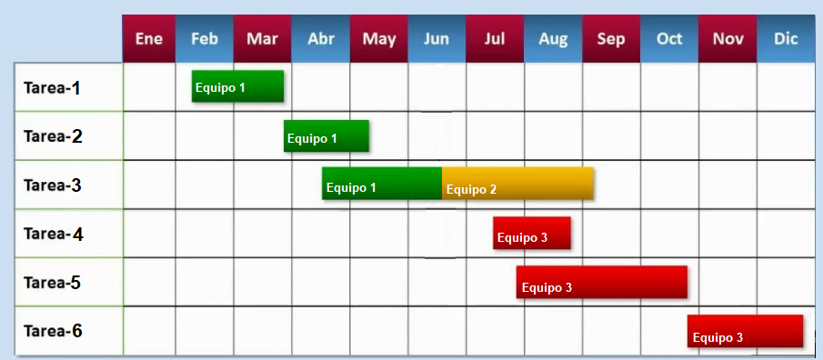
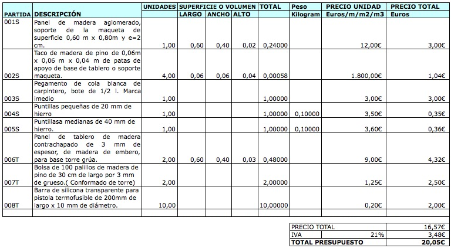

Desarrollo de un producto
El desarrollo incluye todas las etapas del proceso tecnológico una vez ideada la solución al problema planteado: diseño de la solución adoptada, construcción (previa planificación del trabajo, elaboración de presupuestos y construcción y verificación de un prototipo), comercialización (marketing) y eliminación.
En el diseño de un nuevo objeto debe definirse el aspecto final del mismo y, para ello, suelen utilizarse distintos tipos de dibujos o planos:
- Dibujos de conjunto. Perspectivas que muestran el objeto en su totalidad para dar una idea de su aspecto final y modo de uso.
- Vistas principales del objeto. Plantas, perfiles y alzados, así como secciones representativas. Permiten indicar la geometría y las medidas del objeto.
- Despieces. Son perspectivas y vistas de cada una de las partes que componen el objeto.
- Detalles de piezas y uniones. Para aclarar las partes más difíciles de fabricar en cada caso.
Antes de construir el objeto o crear tu producto, debe existir una correcta planificación de las tareas a realizar por cada miembro del equipo, para lo que suelen utilizarse diferentes documentos en los que se muestren claramente cuándo y quiénes realizan cada una de dichas tareas y la temporalización de las mismas. Por ejemplo, se pueden utilizar:
- Hojas de procesos. Tablas en las que se reflejan cada una de las acciones necesarias para la fabricación del objeto, quién es responsable de hacerlas, qué materiales y herramientas hacen falta y el tiempo necesario para llevarlas a cabo.

- Diagramas de Gantt de gestión del tiempo. Documentos que indican en qué momento se debe llevar a cabo cada tarea y cuáles se pueden simultanear, mediante el empleo de barras ubicadas a lo largo de una línea de tiempo.

El presupuesto sirve para conocer los costes de fabricación de un objeto, para poder tomar decisiones acerca de la viabilidad del proyecto completo, su rentabilidad y la posibilidad de cambiar algo en el diseño o los materiales que reduzcan el coste del mismo. Para elaborar el presupuesto necesitamos conocer el coste de cada elemento, teniendo en cuenta los materiales y la mano de obre necesarios para fabricarlo.

Una vez definido por completo, conociendo los pasos que necesitamos para construirlo y el coste que va a tener, podemos empezar la fabricación de un prototipo siguiendo la hoja de procesos. En este punto, es muy probable que aparezcan problemas nuevos y haya que adoptar soluciones sobre la marcha. Los cambios sobre la idea original se deben ir apuntando y, si es necesario, se deben rehacer los planos del diseño.
Una vez construido, hay que proceder a la verificación del prototipo para ver si cumple con su cometido y si admite mejoras, planteando cuestiones como:
- Funcionalidad. ¿Cumple los requisitos para los que está pensado? ¿Es fácil su manejo? ¿Requiere instrucciones?
- Apariencia. ¿Resulta agradable estéticamente? ¿Se puede mejorar su apariencia?
- Accesibilidad. ¿Se adapta a los usuarios a los que está destinado? ¿Incita al uso?
- Materiales. ¿Hemos elegido bien los materiales? ¿Son reciclables? ¿Podríamos haber elegido materiales más económicos?
- Durabilidad. ¿Cuánto tiempo durará el objeto si se le da un buen uso? ¿Es frágil o fácilmente rompible? La vida útil de un producto es el tiempo que un producto puede usarse con todas sus prestaciones intactas. Hay ocasiones en que, ante productos muy duraderos o como fórmula para obtener mayor beneficio económico, los fabricantes emplean la obsolescencia programada, que acorta la vida útil del producto con el fin de promover la compra de otro similar.
- Mantenimiento. ¿Necesitará alguna tarea de mantenimiento como engrasado de piezas o sustitución de las mismas con el tiempo? ¿Con qué frecuencia?
- Etc.
Es importante en este momento la opinión de cuantas más personas mejor, antes de proceder al lanzamiento definitivo de nuestro producto al mercado.
Una vez empiece la fabricación de nuestro producto, debemos centrarnos en su comercialización (marketing). Es el conjunto de medios que emplea la compañía para vender el producto con la intención de obtener beneficio económico. El plan de marketing tiene en cuenta los siguientes aspectos:
- Fijación del precio.
- Distribución del producto desde el fabricante al consumidor: productor --> mayorista --> minorista --> consumidor final. Normalmente, el mayorista compra el producto en grandes cantidades y vende al minorista cantidades más pequeñas. Este, a su vez, vende al consumidor final, a través de una tienda física u online.
- Publicidad (en papel, en formato multimedia, a través de redes sociales,...).
- Promoción (muestras, degustaciones,...).
- Servicio integral al cliente para atender dudas, reclamaciones, reparaciones...
La eliminación de un producto comienza una vez que ha finalizado su uso y se convierte en RSU (residuo sólido urbano). El tratamiento de los RSU se lleva a cabo mediante el reciclaje (donde se recuperan los materiales para fabricar un nuevo producto), el depósito en un vertedero controlado o la incineración (obteniéndose energía en forma de calor o electricidad).